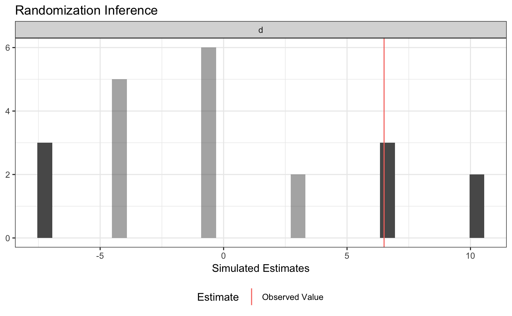
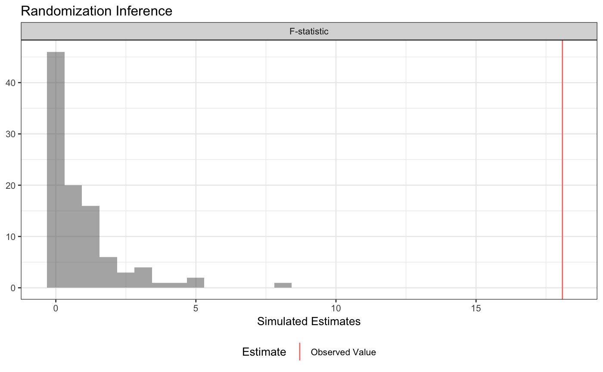
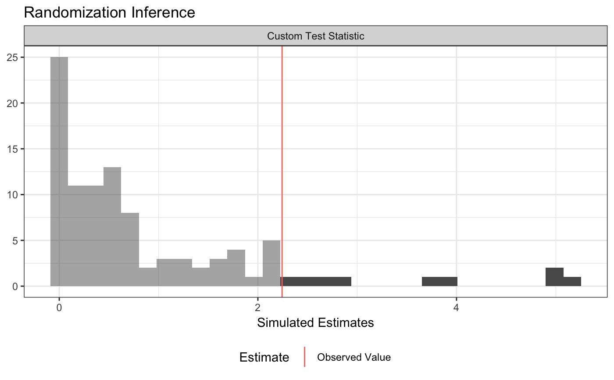

conduct_ri.RdThis function makes it easy to conduct three kinds of randomization inference.
conduct_ri(formula = NULL, model_1 = NULL, model_2 = NULL, test_function = NULL, assignment = "Z", outcome = NULL, declaration = NULL, sharp_hypothesis = 0, studentize = FALSE, IPW = TRUE, IPW_weights = NULL, sampling_weights = NULL, permutation_matrix = NULL, data, sims = 1000, progress_bar = FALSE, p = "two-tailed")
| formula | an object of class formula, as in |
|---|---|
| model_1 | an object of class formula, as in |
| model_2 | an object of class formula, as in |
| test_function | A function that takes data and returns a scalar test statistic. |
| assignment | a character string that indicates which variable is randomly assigned. Defaults to "Z". |
| outcome | a character string that indicates which variable is the outcome variable. Defaults to NULL. |
| declaration | A random assignment declaration, created by |
| sharp_hypothesis | either a numeric scalar or a numeric vector of length k - 1, where k is the number of treatment conditions. In a two-arm trial, this number is the *hypothesized* difference between the treated and untreated potential potential outcomes for each unit.. In a multi-arm trial, each number in the vector is the hypothesized difference in potential outcomes between the baseline condition and each successive treatment condition. |
| studentize | logical, defaults to FALSE. Should the test statistic be the t-ratio rather than the estimated ATE? T-ratios will be calculated using HC2 robust standard errors or their clustered equivalent. CLUSTERING NOT YET IMPLEMENTED. |
| IPW | logical, defaults to TRUE. Should inverse probability weights be calculated? |
| IPW_weights | a character string that indicates which variable is the existing inverse probability weights vector. Usually unnecessary, as IPW weights will be incorporated automatically if IPW = TRUE. Defaults to NULL. |
| sampling_weights | a character string that indicates which variable is the sampling weights vector. Optional, defaults to NULL. NOT YET IMPLEMENTED |
| permutation_matrix | An optional matrix of random assignments, typically created by |
| data | A data.frame. |
| sims | the number of simulations. Defaults to 1000. |
| progress_bar | logical, defaults to FALSE. Should a progress bar be displayed in the console? |
| p | Should "two-tailed", "upper", or "lower" p-values be reported? Defaults to "two-tailed" |
1. Conduct hypothesis tests under the sharp null when the test statistic is the difference-in-means or covariate-adjusted average treatment effect estimate. 2. Conduct "ANOVA" style hypothesis tests, where the f-statistic from two nested models is the test statistic. This procedure is especially helpful when testing interaction terms under null of constant effects. 3. Arbitrary (scalar) test statistics
# Data from Gerber and Green Table 2.2 # Randomization Inference for the Average Treatment Effect table_2.2 <- data.frame(d = c(1, 0, 0, 0, 0, 0, 1), y = c(15, 15, 20, 20, 10, 15, 30)) ## Declare randomization procedure declaration <- declare_ra(N = 7, m = 2) ## Conduct Randomization Inference out <- conduct_ri(y ~ d, declaration = declaration, assignment = "d", sharp_hypothesis = 0, data = table_2.2) summary(out)#> term estimate two_tailed_p_value #> 1 d 6.5 0.3809524plot(out)tidy(out)#> term estimate p.value #> 1 d 6.5 0.3809524# Randomization Inference for an Interaction N <- 100 declaration <- randomizr::declare_ra(N = N, m = 50) Z <- randomizr::conduct_ra(declaration) X <- rnorm(N) Y <- .9 * X + .2 * Z + 1 * X * Z + rnorm(N) dat <- data.frame(Y, X, Z) ate_obs <- coef(lm(Y ~ Z, data = dat))[2] out <- conduct_ri( model_1 = Y ~ Z + X, model_2 = Y ~ Z + X + Z * X, declaration = declaration, assignment = "Z", sharp_hypothesis = ate_obs, data = dat, sims = 100 ) plot(out)summary(out)#> term estimate two_tailed_p_value #> 1 F-statistic 18.08285 0#> term estimate two_tailed_p_value #> 1 F-statistic 18.08285 0#> term estimate upper_p_value #> 1 F-statistic 18.08285 0#> term estimate lower_p_value #> 1 F-statistic 18.08285 1tidy(out)#> term estimate p.value #> 1 F-statistic 18.08285 0# Randomization Inference for arbitrary test statistics ## In this example we're conducting a randomization check (in this case, a balance test). N <- 100 declaration <- randomizr::declare_ra(N = N, m = 50) Z <- randomizr::conduct_ra(declaration) X <- rnorm(N) Y <- .9 * X + .2 * Z + rnorm(N) dat <- data.frame(Y, X, Z) balance_fun <- function(data) { f_stat <- summary(lm(Z ~ X, data = data))$f[1] names(f_stat) <- NULL return(f_stat) } ## confirm function works as expected balance_fun(dat)#> [1] 2.243693## conduct randomization inference out <- conduct_ri( test_function = balance_fun, declaration = declaration, assignment = "Z", sharp_hypothesis = 0, data = dat, sims = 100 ) plot(out)summary(out)#> term estimate two_tailed_p_value #> 1 Custom Test Statistic 2.243693 0.09tidy(out)#> term estimate p.value #> 1 Custom Test Statistic 2.243693 0.09